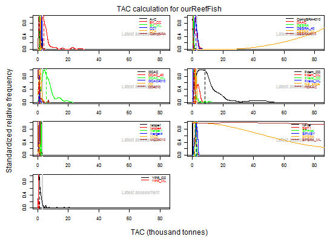

Example data object with a number of output control MPs run on it, and includes resulting distributions of TACs
data("ourReefFish")
The format is: Formal class 'DLM_data' [package "DLMtool"] with 71 slots ..@ Name : chr "ourReefFish" ..@ Year : num [1:55] 1954 1955 1956 1957 1958 ... ..@ Cat : num [1, 1:55] 1.33 1.46 1.66 1.56 2.23 ... ..@ Ind : num [1, 1:55] 0.163 0.138 0.148 0.157 0.146 ... ..@ Rec : num [1, 1:55] NA NA NA NA NA NA NA NA NA NA ... ..@ t : num 54 ..@ AvC : num 1.84 ..@ Dt : num 0.545 ..@ Mort : num 0.094 ..@ FMSY_M : num 0.7 ..@ BMSY_B0 : num 0.3 ..@ Cref : num NA ..@ Bref : num NA ..@ Iref : num NA ..@ L50 : num 31.6 ..@ L95 : num 52.5 ..@ LFC : num 20 ..@ LFS : num 36 ..@ CAA : num [1, 1:21, 1:48] 0 0 0 0 0 0 0 0 0 0 ... ..@ Dep : num 0.2 ..@ Abun : num NA ..@ vbK : num 0.192 ..@ vbLinf : num 85.6 ..@ vbt0 : num -0.395 ..@ wla : num 0.0000167 ..@ wlb : num 2.95 ..@ steep : num 0.99 ..@ CV_Cat : num 0.2 ..@ CV_Dt : num 0.25 ..@ CV_AvC : num 0.2 ..@ CV_Ind : num 0.2 ..@ CV_Mort : num 0.2 ..@ CV_FMSY_M : num 0.2 ..@ CV_BMSY_B0: num 0.045 ..@ CV_Cref : num 0.2 ..@ CV_Bref : num 0.2 ..@ CV_Iref : num 0.2 ..@ CV_Rec : num 0.2 ..@ CV_Dep : num 0.25 ..@ CV_Abun : num 0.25 ..@ CV_vbK : num 0.00803 ..@ CV_vbLinf : num 0.00325 ..@ CV_vbt0 : num 0.00777 ..@ CV_L50 : num 0.1 ..@ CV_LFC : num 0.2 ..@ CV_LFS : num 0.2 ..@ CV_wla : num 0.1 ..@ CV_wlb : num 0.1 ..@ CV_steep : num 0.1 ..@ sigmaL : num 0.2 ..@ MaxAge : num 48 ..@ Units : chr "thousand tonnes" ..@ Ref : num NA ..@ Ref_type : chr NA ..@ Log :List of 1 .. ..$ : chr "Created: 2016-02-18 14:28:11" ..@ params : list() ..@ PosMPs : chr [1:31] "AvC" "BK_CC" "BK_ML" "CC1" ... ..@ MPs : chr [1:31] "AvC" "BK_CC" "BK_ML" "CC1" ... ..@ OM :'data.frame': 1 obs. of 1 variable: .. ..$ NA.: logi NA ..@ Obs :'data.frame': 1 obs. of 1 variable: .. ..$ NA.: logi NA ..@ TAC : num [1:31, 1:100, 1] 1.36 15.91 1.14 3.08 1.77 ... ..@ TACbias : logi [1, 1, 1] NA ..@ Sense : logi [1, 1, 1] NA ..@ CAL_bins : num [1:44] 0 20 22 24 26 28 30 32 34 36 ... ..@ CAL : num [1, 1:28, 1:43] 0 0 2 1 0 1 0 0 0 0 ... ..@ MPrec : num NA ..@ MPeff : num NA ..@ ML : num [1, 1:55] NA NA NA NA NA NA NA NA NA NA ... ..@ Lbar : num [1, 1:55] NA NA NA NA NA NA NA NA NA NA ... ..@ Lc : num [1, 1:55] NA NA NA NA NA NA NA NA NA NA ... ..@ LHYear : num 2008 ..@ Misc : list()
data(ourReefFish) str(ourReefFish) ;#> Formal class 'DLM_data' [package "DLMtool"] with 72 slots #> ..@ Name : chr "ourReefFish" #> ..@ Year : num [1:55] 1954 1955 1956 1957 1958 ... #> ..@ Cat : num [1, 1:55] 1.33 1.46 1.66 1.56 2.23 ... #> ..@ Ind : num [1, 1:55] 0.163 0.138 0.148 0.157 0.146 ... #> ..@ Rec : num [1, 1:55] NA NA NA NA NA NA NA NA NA NA ... #> ..@ t : num 54 #> ..@ AvC : num 1.84 #> ..@ Dt : num 0.545 #> ..@ Mort : num 0.094 #> ..@ FMSY_M : num 0.7 #> ..@ BMSY_B0 : num 0.3 #> ..@ Cref : num NA #> ..@ Bref : num NA #> ..@ Iref : num NA #> ..@ L50 : num 31.6 #> ..@ L95 : num 52.5 #> ..@ LFC : num 20 #> ..@ LFS : num 36 #> ..@ CAA : num [1, 1:21, 1:48] 0 0 0 0 0 0 0 0 0 0 ... #> ..@ Dep : num 0.2 #> ..@ Abun : num NA #> ..@ vbK : num 0.192 #> ..@ vbLinf : num 85.6 #> ..@ vbt0 : num -0.395 #> ..@ wla : num 1.67e-05 #> ..@ wlb : num 2.95 #> ..@ steep : num 0.99 #> ..@ CV_Cat : num 0.2 #> ..@ CV_Dt : num 0.25 #> ..@ CV_AvC : num 0.2 #> ..@ CV_Ind : num 0.2 #> ..@ CV_Mort : num 0.2 #> ..@ CV_FMSY_M : num 0.2 #> ..@ CV_BMSY_B0: num 0.045 #> ..@ CV_Cref : num 0.2 #> ..@ CV_Bref : num 0.2 #> ..@ CV_Iref : num 0.2 #> ..@ CV_Rec : num 0.2 #> ..@ CV_Dep : num 0.25 #> ..@ CV_Abun : num 0.25 #> ..@ CV_vbK : num 0.00803 #> ..@ CV_vbLinf : num 0.00325 #> ..@ CV_vbt0 : num 0.00777 #> ..@ CV_L50 : num 0.1 #> ..@ CV_LFC : num 0.2 #> ..@ CV_LFS : num 0.2 #> ..@ CV_wla : num 0.1 #> ..@ CV_wlb : num 0.1 #> ..@ CV_steep : num 0.1 #> ..@ sigmaL : num 0.2 #> ..@ MaxAge : num 48 #> ..@ Units : chr "thousand tonnes" #> ..@ Ref : num 3.12 #> ..@ Ref_type : chr "Latest assessment" #> ..@ Log :List of 1 #> .. ..$ : chr "Created: 2016-05-06 15:22:46" #> ..@ params : list() #> ..@ PosMPs : chr [1:38] "AvC" "BK_CC" "BK_ML" "CC1" ... #> ..@ MPs : chr [1:38] "AvC" "BK_CC" "BK_ML" "CC1" ... #> ..@ OM :'data.frame': 1 obs. of 1 variable: #> .. ..$ NA.: logi NA #> ..@ Obs :'data.frame': 1 obs. of 1 variable: #> .. ..$ NA.: logi NA #> ..@ TAC : num [1:38, 1:100, 1] 1.88 1.5 1.62 2.56 2.1 ... #> ..@ TACbias : logi [1, 1, 1] NA #> ..@ Sense : logi [1, 1, 1] NA #> ..@ CAL_bins : num [1:44] 0 20 22 24 26 28 30 32 34 36 ... #> ..@ CAL : num [1, 1:28, 1:43] 0 0 2 1 0 1 0 0 0 0 ... #> ..@ MPrec : num NA #> ..@ MPeff : num NA #> ..@ ML : num [1, 1:55] NA NA NA NA NA NA NA NA NA NA ... #> ..@ Lbar : num [1, 1:55] NA NA NA NA NA NA NA NA NA NA ... #> ..@ Lc : num [1, 1:55] NA NA NA NA NA NA NA NA NA NA ... #> ..@ LHYear : num 2008 #> ..@ Misc : list() #>plot(ourReefFish)